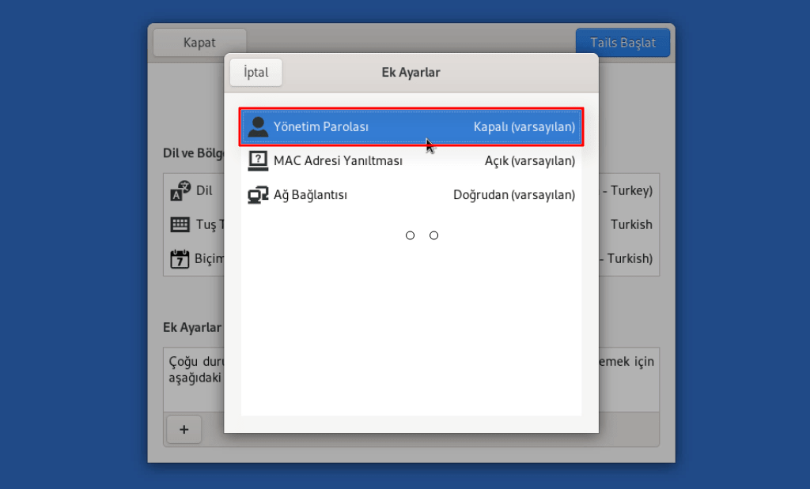
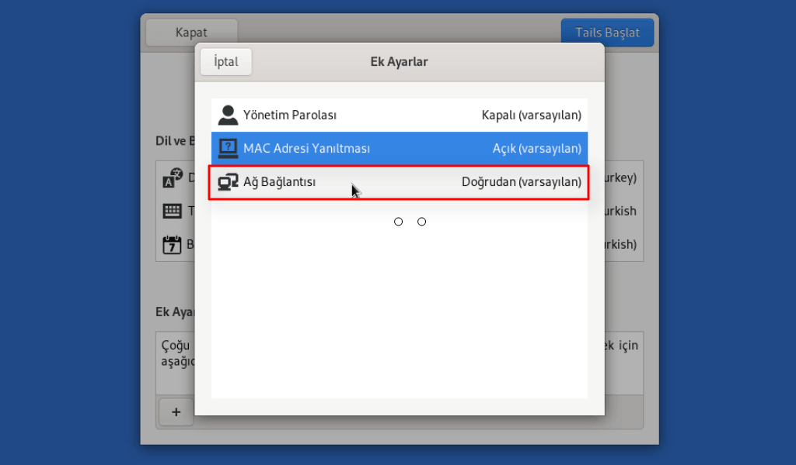
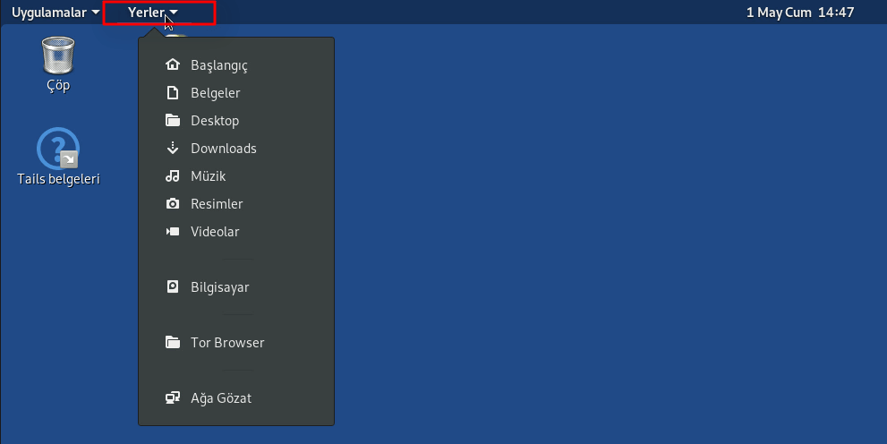
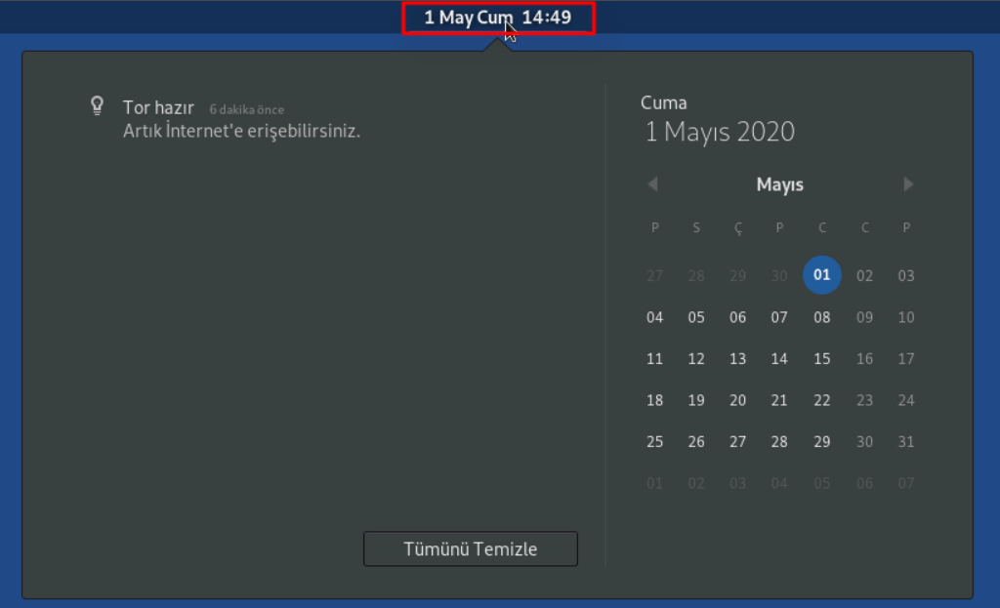
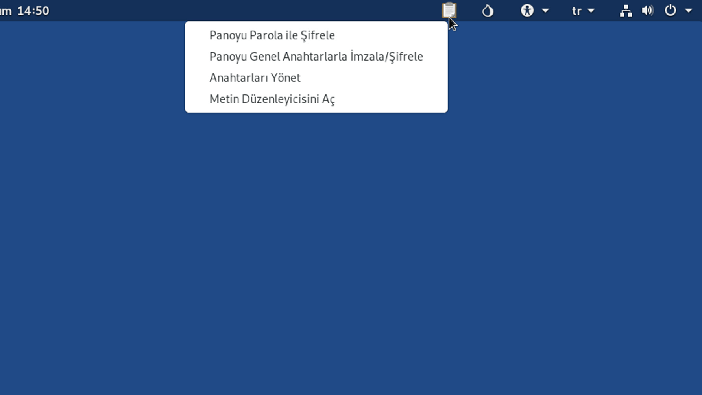

Tail İşletim Sistemi
Tail, gizlilik odaklı olarak geliştirilmiş Linux tabanlı bir işletim sistemidir. Geliştirilmesine finansal olarak en çok katkıyı Tor projesi sağlamıştır. Bu işletim sisteminde tüm internet trafiği Tor ağı üzerinden yönlendirilir. Tail işletim sisteminin temel özelliklerini anlamak için isminin nereden geldiğine bakmamız yeterli.
Hemen isim açılımını ele alarak özelliklere göz atalım.
Tail = the amnesic incognito live system The Amnesic; Bu ifade "amnezi" yani "hafıza kaybını" ifade ediyor. Tail işletim sistemi, çalıştırıldığı bilgisayar üzerinde hiç bir iz bırakmadığı için bu isimlendirme yapılmıştır. Tail, tüm işlemleri ram üzerinden yürüterek sistem kapandığında geriye hiç bir iz kalmamasını sağlar. Hatta ram üzerinden anlık kayıtların kurtarılmasını önlemek için ayrıca kapatma işlemi sırasında ram üzerine rastgele veriler yazarak, ram üzerinden yürütülen işlemlerin belirli bir süre ram üzerinde kalması ihtimalini bile önler. Yani "amnezik" bir sistemdir, geride kalıntı bırakmaz.
Incognito; Bu ifade ise "kimliği gizlemek" anlamına geliyor. Tail işletim sistemi, gizliliğimizi ve anonimliğimizi korumak adına tüm internet trafiğini Tor ağı üzerinden sağlar. Ayrıca içerisinde bulunan programların güvenlik açısından sıkı denetimini yapar. Dolayısı ile "incognito" kelimesi de sistemin gizlilik ve anonimlik özelliğini ifade ediyor.
Live; Bu kelime ise "yaşayan-nakledilebilen" anlamına geliyor. Tail işletim sistemi USB ya da DVD üzerine yazılarak herhangi bir bilgisayar üzerinden çalıştırılabildiği için bu şekilde isimlendirilmiştir. Yani Tail taşınabilir bir işletim sistemidir.
Tail işletim sisteminin kendi isim açılımı ile de açıkça ifade ettiği başlıca özellikleri bu şekilde. Zaten eğitimin devamında bilmemiz gereken tüm özelliklerinin detaylarına da değinmiş olacağız.
Şimdi yeri gelmişken neden sadece Tor Browser kullanmak yerine Tail işletim sistemini kullanmanın çok daha iyi güvenlik ve gizlilik sağladığını kıyaslama yaparak görelim.
Kıyaslama
| Tor Browser | Tail İşletim Sistemi |
|---|---|
Kıyaslamayı pek çok farklı madde ile uzun uzadıya devam ettirebiliriz. Ancak temelde bilmemiz gereken; Tail işletim sisteminin, herhangi bir sistem üzerinden Tor Browser kullanmaya oranla bizlere çok daha güvenli bir çalışma ortamı sağladığıdır. Tek başına herhangi bir işletim sisteminde Tor tarayıcısını kullanmak, gizliliğin ya da anonimliğin çok da önemli olmadığı durumlarda başvurulabilecek pratik bir çözümdür. Yani tek başına Tor tarayıcısını kullanmak tamamen kullanışsızdır demiyorum. Zaten Tail işletim sistemi içerisinde de Tor tarayıcısını kullanıyor olacağız. Tail işletim sisteminin özelliği bizlere çok daha izole ve güvenli bir ortam sunmasıdır. Sistemin kullanımını ele alırken, neden çok daha güvenli ve kullanışlı olduğunu zaten anlamış olacaksınız.
Şimdilik anlatımlara Tail işletim sisteminin kurulum seçeneklerinden bahsederek devam edelim.
Tail OS Kurulum Seçenekleri
Tail işletim sistemini kullanabileceğimiz başlıca yöntemler aşağıdaki gibidir.
- Sanallaştırma yazılımları(Virtualbox, Vmware..) üzerinden sanal olarak kullanım.
- DVD üzerinden kullanım.
- USB disk üzerinden kullanım.
Bu alternatifler içerisinden en kullanışlı olanı kesinlikle USB üzerinden kullanımdır. Nedenini yeri geldiğini anlamış olacaksınız. Şimdi tek tek kurulum metotlarından bahsedelim.
Sanal Olarak Kullanım
Sanallaştırma yazılımları herhangi bir işletim sistemini, mevcut işletim sistemimiz üzerinde sanal olarak çalıştırabilmemize olanak tanırlar. Örneğin Windows kurulu bir işletim sistemi içerisinde sanallaştırma yazılımı ile aynı anda Tail işletim sistemini de çalıştırabilirim. Standart sanallaştırma yazılımları pek çok farklı durumda harika bir çözüm olsa da önceliğimiz güvenlik olduğunda uzak durmamız gereken bir alternatiftir.
Dezavantajlarından bahsetmemiz gerekirse;
- Ana makinede yani sanal olmayan işletim sisteminde meydana gelebilecek her türlü zaafiyet, sanal makineyi de etkileyeceği için Tail işletim sisteminin aldığı güvenlik önlemlerinin anlamı kalmayacaktır.
- Sanal kullanımda, mevcut işletim sistemi üzerinde kullanıma dair kalıntılar kalacağı için gizliliğimiz ihlal edilebilir.
- Çalışmakta olan bir işletim sistemi içerisinde başka bir işletim sistemi daha çalıştırdığımız için bilgisayarın ram, işlemci gibi kaynakları her iki sisteme de ayrılacağından performans sorunlarına neden olabilir.
Yani uzun lafın kısası; Eğer sanallaştırma yazılımları ile Tail işletim sistemini kullanırsanız, güvenli bir işletim sistemini güvensiz bir ortamda çalıştıracağınız için Tail işletim sisteminin tüm güvenlik önlemlerini anlamsız kılmış olursunuz. Bu kullanımı kesinlikle önermiyorum.
DVD Üzerinden Kullanım
DVD üzerinden kullanmak için öncelikle DVD üzerine Tail işletim sisteminin kurulumunu yapıyoruz. Böylelikle kurulumunu yaptığımız DVD ile, DVD okuyucusu bulunan herhangi bir bilgisayar üzerinden Tail işletim sistemini çalıştırabiliyoruz. DVD kurulumu ve kullanımı USB üzerinden kurulum ve kullanım ile aynıdır. Fakat dezavantaj olarak her bilgisayarda DVD okuyucusunun bulunmaması ve DVD diskinin zamanla yıpranıp bozulma ihtimalinin, USB diske oranla çok daha fazla olması var. Ayrıca DVD kullanımı, depolama alanı bakımından da tatmin edici bir tercih olmayacaktır.
USB Disk Üzerinden Kullanım
En makul kullanım yöntemi olan seçenek USB disk üzerinden kullanmaktır. Bir kez kurulduktan sonra istenilen bilgisayarda sorunsuzca çalıştırılabilir ve geride hiç bir iz bırakmaz. Ayrıca yeni sürümleri için yeniden kuruluma ihtiyaç duymadan sistemi USB diskimiz üzerinden sürekli güncelleyebilme imkanımız da vardır. Ek olarak kolay taşınabilir olduğu ve dosyaların bozulması, zarar görmesi DVD diske oranla daha düşük bir ihtimal olduğundan ideal tercihtir.
Tüm artıları ve eksileri düşünüldüğünde kullanım yöntemleri içerisinde en güvenli ve en verimlisi USB disk üzerinden kullanımdır. Ben de bu eğitimde yalnızca USB disk üzerine kurulumu göstereceğim. Ancak sanal olarak kullanmak ya da DVD üzerinden çalıştırmak isteseniz de kısa bir internet araştırması ile kurulumları nasıl yapabileceğinizi bulabilirsiniz. Yine de tekrar bu yöntemlerin kullanışsız ve güvenliğinizi riske atabilecek yöntemler olduğunu da hatırlatarak uzak durmanızı tavsiye ediyorum.
USB üzerinden kullanım için tek şart, USB diskinizin en az 8 GB depolama alanına sahip olmasıdır.
USB diskimiz bu tek şartı da sağlıyorsa şimdi USB diskimize nasıl Tail işletim sistemini kurarız onu görelim.
Tail OS İndirmek Ve Kurmak
Ben bu bölümde anlatımları Windows üzerinden gerçekleştireceğim ancak anlatacağım her şey diğer işletim sistemlerinden de ortak şekilde takip edilebilir. Yani buradaki anlatımın Windows üzerinden olmasına takılmayın lütfen, sadece beni takip edip adımları kendi sisteminizde uygulamanız yeterli.
Öncelikle Tail işletim sistemini edinmek üzere web sitesini ziyaret edelim. Açılan sayfadan "install" butonuna tıklayalım. Karşımıza gelen sayfanın alt tarafına gelerek kurmak istediğimiz metoda uygun olan kurulum imajını seçelim. Ben USB üzerinden kurulumu ele alacağım için "For USB Sticks" bağlantısına tıklıyorum.
Gördüğünüz gibi USB kurulumu için indirme ve doğrulama sayfası karşımıza gelmiş oldu.
Buradan indirme butonuna basarak imaj dosyamızın indirilmesini başlatalım. İmaj dosyamız indikten sonra, daha önce Tor tarayıcısında da yaptığımız şekilde dosyamızın değiştirilip değiştirilmediğini anlamak için doğrulama yapmamız gerekiyor. Doğrulama işlemi için doğrulama eklentisini indirip kuralım. Eklentiyi kurduktan sonra doğrulama butonuna basalım ve indirmiş olduğumuz imaj dosyasını seçelim. Bir müddet sonra gördüğünüz gibi dosyamız başarılı şekilde doğrulanmış oldu. Eğer sizde bu yazı çıkmıyorsa dosya içeriği değişikliğe uğramış olabilir. Bu durumda alternatif seçenek olan Torrent üzerinden indirme işlemini deneyebilirsiniz. Torrent indirmesi için buradaki butona basarak Torrent dosyasını indirin. Ve herhangi bir Torrent indirme aracını kullanarak işletim sistemi imajının indirilmesini sağlayın. Torrent üzerinden indirme işleminden sonra da aynı şekilde dosyanızı eklenti yardımı ile kontrol edin. Eğer indirme ve doğrulama aşamasında sorun yaşarsanız bana soru cevap kısmından yazabilirsiniz.
Evet, böylelikle kurulum dosyamızı güvenli şekilde temin etmiş olduk. Şimdi sırada, USB diskimizin üzerine kurulumu yapmamızı sağlayacak olan aracı temin etmek var. Kurulum işleminde, açık kaynaklı olduğu ve Windows, MacOS, Linux platformlarda ortak şekilde çalışabildiği için "belena etcher" yazılımı kullanacağım. Yine de sizler kendi işletim sisteminize özel olan olan alternatif araçları da kullanabilirsiniz. Ben sadece çoklu platformları desteklemesi ve açık kaynaklı olması nedeniyle bu aracı seçtim.
Şimdi kurulum aracımızı indirmek üzere web sitesini ziyaret edelim.
Web sitesine eriştiğimizde gördüğünüz gibi çoklu platformlar için indirme bağlantıları bulunuyor.
Buradan kullanmakta olduğunuz sistem için uygun olan dosyayı seçip indirebilirsiniz. Ben anlatımı Windows üzerinden gerçekleştirdiğim için buradan Windows sürümünü seçeceğim. Ayrıca gördüğünüz gibi Windows için portable yani kurulum yapmadan kullanma imkanımız da var. Dilerseniz portatif sürümü seçerek kuruluma gerek kalmadan bu aracı kullanabilirsiniz. Ben şimdilik standart olan yöntemi tercih ederek dosyamı indiriyorum. İndirme işleminin ardından oldukça kolay olan kurulum işlemini de tamamlayıp programı açıyorum. Artık hem Tail sistem kalıbımız hem de kurulum için gereken programımız hazır olduğuna göre, tek yapmamız gereken USB diskimizi sisteme takıp kurulum işlemini gerçekleştirmek. USB diskinizin 8 GB ya da daha büyük depolama alanına sahip olması yeterli.
Kurulum için USB diskimizi ve kurulum imajımızı seçerek işlemi başlatıyoruz.
Bir süre sonra kurulum işlemi tamamlanıyor ve artık USB diskimiz üzerinden Tail işletim sistemini çalıştırmaya hazırız.
Bir sonraki kısımda kurulumunu tamamlamış olduğumuz Tail işletim sistemini nasıl USB üzerinden başlatacağımızı görmüş olacağız. Eğer indirme ve kurulum aşamasında sorun yaşarsanız bana soru cevap alanından yazmaktan çekinmeyin lütfen. Ayrıca benim eğitimi hazırladığım zaman ile sizin eğitimi takip ettiğiniz zaman aralığında web sitelerinde kısmi değişimler olmuş olabilir. Eğer böyle bir durum varsa, web sitesine kısa bir bakış attıktan sonra indirme bağlantılarına ya da dosya doğrulama mekanizmasına kendiniz de kolaylıkla ulaşabilirsiniz. Yine de sorun yaşarsanız elbette benimle de iletişime geçebilirsiniz. Her şey tamamsa hadi Tail işletim sistemimizi USB üzerinden istediğimiz bir bilgisayarda nasıl kullanabileceğimizi öğrenelim.
Tail İşletim Sistemini USB Disk Üzerinden Başlatmak
İçerisinde Tail işletim sistemi yer alan USB diskimizi hangi bilgisayara takarsak, o bilgisayar üzerinde Tail işletim sistemini güvenli bir biçimde kullanabiliyor olacağız. Bu işlem için BIOS üzerinden ayarlama yaparak, bilgisayarın başlangıçta USB disk üzerinden çalışmasını sağlamamız yeterli.
Ayarlamayı yapmak üzere öncelikle bilgisayarın bios menüsüne girmemiz gerekiyor. Bios menüsüne girmek için, bilgisayar başlangıcında bios açılımı için tanımlanmış olan tuşa basmamız gerekiyor. Bu tuş bilgisayardan bilgisayara değişiklik gösterse de genellikle ESC F2 F10 F11 F12 tuşlarından biri oluyor. Zaten genellikle bilgisayar başlangıcında hangi tuşun bios menüsüne girdiğini de ekranın alt tarafta belirtiliyor. Yine de sizin bilgisayarınızda hangi tuşun bios menüsüne girdiğini bilmiyorsanız, marka model ismi ile kısa bir internet araştırması ya da tuşları deneme yanılma sonucunda öğrenebilirsiniz.
Bios menüsüne ulaştığınızda gördüğünüz arayüz bende gördüğünüz bios menü arayüzünden farklı olabilir. Bu hiç önemli değil. Temelde yapmak istediğimiz şey, bilgisayarın USB disk üzerinden başlatılması için boot sırasında USB diski en üste getirmek. Bunun için USB diskimizin bilgisayara takılı oluğundan emin olarak, boot sekmesini buluyoruz ve USB diskimizi boot sıralamasında ilk sıraya getiriyoruz. Sıralamada USB diski nasıl yukarı taşıyabileceğinizi, bios menüsünde yer alan açıklamalar ile öğrenebilirsiniz. Kimi bios menüsünde artı ve eksi tuşları sıralama değiştirmede kullanılıyor olsa da kimilerinde F5 ve F6 tuşları sıralama değiştirme için kullanılabiliyor. Bunu kendi bios menünüzdeki açıklamalardan kolaylıkla öğrenebilirsiniz.
USB diskimizi boot sıralamasında ilk sıraya aldığımızda, bilgisayarımız biz bu ayarı değiştirene ya da usb diskimizi çıkartana kadar USB diskimiz üzerinden başlatılıyor olacak.
Şimdi ayarları kaydedip bilgisayarın yeniden başlatılmasını sağlayalım.
Evet bilgisayarımız yeniden başlatıldı ve otomatik olarak USB diskimiz üzerinden Tail işletim sistemini çalıştırmış oldu. Sizler de bu şekilde hangi bilgisayarda olursa olsun Tail işletim sistemini USB diskiniz üzerinden çalıştırabilirsiniz.
Sistemi USB üzerinden başlatmayı başardığımıza göre şimdi sisteme giriş yapıp, özelliklerinden bahsetmeye başlayalım.
Gördüğünüz gibi sistem açılır açılmaz direk olarak karşımıza temel özellikleri ayarlayabileceğimiz bir pencere açılmış oldu. Bu ayar penceresi, sistemi her açtığımızda bizi karşılıyor olacak. Bunun nedeni daha önce de bahsetmiş olduğumuz sistemin "unutkan" yapısıdır. Burada yer alan ayarlardan da kısaca bahsederek, gerektiğinde hangi ayarları ne şekilde düzenlememiz gerektiğine değinelim.
Sistemin dil ve klavye gibi bölgesel ayarlarını buradan düzenleyebiliyoruz. Benim önerim yalnızca klavye ayarınızı düzenlemeniz yönündedir. Yine de sisteme alışma aşamasında Türkçe dilini de tercih edebilirsiniz. Bu temel ayarların dışında diğer ayarları görmek için artı işaretine tıklayalım.
Admin şifresinin kapalı olması;

Sistemimizin ele geçirilmesi yani hacklenmesi durumunda saldırganların verebileceği zararları sınırlamak için varsayılan olarak kapalı şekilde ayarlanmıştır. Eğer amacınız güvenlikse Tail işletim sisteminde yönetici ayrıcalıkları ile sürekli işiniz olmayacaksa bu özelliğin kapalı olarak kalması sizin için en iyisi olacaktır. Yine de program yüklemek ve sistemle ilgili yönetici izinleri gerektiren diğer işlemleri yapmanız gerektiğinde bu özelliği aktifleştirebilirsiniz. Şimdilik bu özellik kapalı kalsın. Zaten gerektiğinde sistem sizden bu özelliği aktifleştirmenizi talep edecektir.
Mac adresi aldatmasının açık olması;

Kullandığımız cihazların kimliğini belirten, benzersiz MAC adresleri bulunur ve bu adresler kalıcıdır yani zamanla kendiliğinden değişmez. Benzersiz ve değişmeyen bu adres üzerinden de anonimliğimiz ihlal edilebilir. Kimliğimizi tamamen anonim kılmak için MAC adresinin sahtesi ile otomatik olarak değiştirildiği bu özelliğin her zaman açık olmasını şiddetle tavsiye ediyorum. Ancak bağlantı kurduğunuz ağ yalnızca belirli MAC adreslerine izin verecek şekilde çalışıyorsa, bu özelliğin açık olması ağa erişmenize engel olabilir. Yalnızca bu ve bunun gibi durumlarda bu özelliği kapatmanız mantıklı olacaktır.
Ağ ayaları;

Ağ ayarı varsayılan olarak tüm internet trafiğini Tor ağı üzerinden sağlayacak şekildedir. Yani sadece Tor tarayıcısının değil, Tail işletim sistemi içerisindeki tüm programların internet trafikleri de Tor ağı üzerinden yönlendirilir. Alternatif seçeneklerinde, tıpkı Tor tarayıcısı üzerinde ayarladığımız şekilde köprü bağlantısını yapılandırma imkanımız da bulunuyor.
Buradan köprü bağlantısını ayarladığımızda tüm sistemin Tor ağı üzerindeki trafiğinin köprü bağlantısını da ayarlamış oluyoruz. Diğer seçenek ise tüm internet trafiğini kapatmak. Eğer çevrimdışı şekilde çalışmak istiyorsanız bu seçenek ile internet bağlantısından izole bir ortamda faaliyetlerinizi yürütebilirsiniz. Biz şimdilik bu ayarda da bir değişiklik yapmadan işimizi bitirip işletim sistemini başlatalım.
Ve en nihayetinde karşımıza oldukça basit bir arayüzü olan Tail işletim sistemi gelmiş oldu.
Eğer daha önce hiç Linux kullanmadıysanız bu arayüz size biraz alışılmadık gelmiş olabilir. Ancak kesinlikle endişelenmeyin, kullanımı oldukça kolaydır. Zaten bir sonraki bölümde temel olarak ihtiyaç duyabileceğiniz kullanımından bahsediyor olacağız.
Tail OS Genel Kullanım Rehberi
Sistemi kullanmakla ilgili, eğer varsa ön yargılarınızdan kurtulun. Eğitime devam ettikçe Windows ya da MacOS gibi yaygın işletim sistemlerini kullanmak kadar kolay olduğunu bizzat deneyimlemiş olacaksınız.
Üst Çubuk(Görev Çubuğu)
Üst çubukta(görev çubuğu) sistemle ilgili pek çok kısayol yer alıyor. Bu çubuk Windows üzerindeki görev çubuğu ile benzer işlevdedir.
Uygulamalar kısmına tıklarsak;
Sistemde yüklü bulunan bütün uygulamaların kategorize şekilde sıralandığı bir liste karşımıza gelmiş oluyor. Bu panel Windows işletim sistemindeki başlat menüsüne benzer yapıdadır. Buradan dilediğimiz uygulamayı seçip başlatabiliriz. Ayrıca bu liste dışında, klavyemizde yer alan başlat tuşuna basarsak sistem üzerinde yüklü bulunan tüm uygulamalar içerisinde arama yapabileceğimiz bir paneli de açabiliriz. Buradan da istediğimiz uygulamaya kolaylıkla erişebiliyoruz. Hatta yan panelde yer alan uygulamalar simgesine tıklayarak sistemde yüklü bulunan tüm uygulamaları da liste halinde tek elden görüntüleyebiliriz. Gördüğünüz gibi temel olarak ihtiyaç duyabileceğimiz pek çok araç hatta ofis yazılımı sistem içerisinde yüklü geliyor. Üstelik tüm bu araçlar güvenliği test edilmiş, ücretsiz şekilde kullanıma açık olan araçlardır. Biraz kurcalama ile pek çok işinizi kolaylıkla Tail üzerinden de yürütebileceğinizi, sizler de kısa zamanda zaten deneyimlemiş olacaksınız.
Yerler kısmına tıklarsak;

sistem üzerinde yer alan dosyalara kısayoldan erişebileceğimiz panel açılıyor. Örneğin "Desktop" dizinine tıklarsak, dosya yöneticisi doğrudan masaüstü konumunu açmış oluyor. Bu dosya yöneticisi üzerinden sistem üzerinde yer alan ve erişimimiz olan tüm dizinlerde gezinebiliyoruz. Ev dizini bizim "Belgeler", "Resimler", "İndirilenler" ve "Müzikler" gibi kullanıcı hesabımıza ait dosyaların bulunduğu ana konumu temsil ediyor. Bu konumdaki dosyalar biz bilgisayarı kapattığımızda sıfırlanmış olacak. Anlatımın başında Tail işletim sisteminin unutkan bir sistem olduğundan bahsetmiştik. Sistemin sahip olduğu unutma fonksiyonu nedeniyle özellikle belirtilmediği sürece tüm dosyalar sistem kapatılırken siliniyor. Yani örneğin ben herhangi bir dosya indirirsem, bu dosya sistemi kapatıp açtığımda indirilenler konumundan otomatik olarak silinmiş olacak. Ancak bu konuda endişelenmeyin ileride dosyalarımızı nasıl kayıtlı tutabileceğimizi öğrenmiş olacağız. Biz yine de hazır dosya yöneticisini açmışken denemek için yeni bir klasör de oluşturalım. Yeni bir klasör oluşturmak için bulunduğumuz konumda sağ tıklayarak "Yeni Klasör" seçeneğine tıklamamız yeterli. Ayrıca gizli dosyaları nasıl görünür kılabileceğimizi de hazır dosya yöneticisi açıkken görelim. Örneğin ben ana dizin olan ev dizinimde yer alan gizli dosyaları görüntülemek istersem arama butonunun yanında yer alan listeleme seçeneklerinden "Gizli Dosyaları Göster" seçeneğini aktif etmem yeterli.
Gizli dosyaları aktif ettikten sonra, ana dizinimizde aslında ne kadar çok gizli dosya bulunduğunu da görebiliyoruz. Fark ettiyseniz gizli dosyaların hepsinin başında nokta işareti yer alıyor. Bu bir tesadüf değil. Linux sistemlerinde isminin başında nokta bulunan her türlü dosya ya da klasör "gizli" olarak kabul ediliyor. Örneğin yeni oluşturmuş olduğumuz klasörün isminin başına da nokta koyduğumuzda klasörümüz gizli klasör formuna dönüşüyor. Test etmek için gizli dosyaları gösterme özelliğini kapatabiliriz.
Ayrıca dosyalar uygulamasını açtığımız için görev çubuğunda açtığımız uygulama da gözüküyor. Buradan sağ tıklayarak uygulamayı kapatma gibi faaliyetler yürütebiliriz.
Saat ve tarih kısmına tıklarsak; takvim ve sistem bildirimleri paneli açılıyor. Buradan bildirimleri takip edip, takvime göz atabiliriz.

Pano simgesine tıklarsak; ileride ele alacağımız şifreleme işlemlerinde kullanacağımız şifreleme aracının kısayoluna ulaşmış oluyoruz. Bu kısayolu şifreleme konusunu ele alırken sıklıkla kullanıyor olacağız. Şimdilik simgenin bu işlevde olduğunu bilmeniz yeterli.

Tor simgesine tıklarsak; açık onion devrelerine ulaşabilmemiz mümkün oluyor. Açılan pencereden mevcut Tor devreleri ve bağlantı durumları hakkında bilgi edinebiliyoruz. Eğer bağlantıda sorun yaşıyorsanız buradaki simge sizde çarpı işaretli olarak gözüküyor olabilir. Çarpı işareti bağlantı sorunlarını temsil ediyor.
Erişilebilirlik simgesine tıklarsak; pek çok işletim sisteminden aşina olduğumuz "büyük yazı", "ekran klavyesi" ve "yakınlaştırma" gibi yardımcı araçları aktifleştirebileceğimiz bir liste paneli açılıyor. Örnek olarak büyük yazıları aktifleştirip, yazıların büyüdüğünü teyit edebiliriz.
Klayve ayarımızı değiştirmek için mevcut klavyenin diline tıklayıp yenisi ile değişim yapabiliyoruz. Ayrıca mevcut klavye düzenini görmek için "Klavye Düzenini Göster" kısmına tıklayabiliriz.
Yan yana yer alan internet bağlantısı, ses düzeyi ve güç simgelerinden birine tıklarsak; tüm bu özellikler hakkında bilgi alıp değiştirebileceğimiz panel açılıyor.
Eğer Tail sistemini dizüstü bilgisayarınızda kullanıyorsanız tüm bunlara ek olarak pilin ve ekran parlaklığının durumunu da gösteren simgeyi de görmeniz mümkündür. Açılan panelden ses düzeyini ve mevcutsa ekran parlaklığını değiştirebiliriz. Eğer Tail işletim sistemi wifi kartımızı destekliyorsa internet bağlantımızı wifi üzerinden sağlayabilir ya da kablolu bağlantıyı buradan kapatıp tekrar açabiliriz. Ayrıca panelde yer alan ayarlar simgesine tıklayarak sistem ayarlarının açılmasını sağlayabiliriz. Bu ayarlara biraz sonra değineceğiz. Şimdi paneldeki diğer simgelerden de bahsedelim.
Panelde yer alan kilit simgesi oturumu kilitlememizi sağlıyor. Eğer yönetici ayrıcalıkları ile sistemi başlatmadıysak parola da belirlemediğimiz için bu simgeye tıkladığımızda oturumu kilitlemeden önce parola belirlememizi istiyor. Buradan parolamızı belirleyip "Ekranı Kilitle" diyerek oturumun kilitlenmesini sağlayalım. Tekrar oturum açmak için gördüğünüz gibi sistem bizden parola talep ediyor. Bu parola, sistemi tamamen kapatana kadar geçerli olacak olan oturumu korumak içindir. Yani sistemi kapattığımızda bu parola da silinmiş olacak. Parolamızı yazıp oturumumuzu tekrar açalım.
Durdurma simgesi, sistemi uyku moduna almamızı sağlıyor. Ayrıca yan yana yer alan diğer butonlardan sistemi yeniden başlatabilir ya da tamamen kapatılmasını sağlayabiliriz.
Ayarlardan bahsedeceğimizi söyledik ancak tüm ayarları tek tek ele almamız gerek yok. Çünkü ihtiyacınız olan ayarı buradaki kategorilere göz atarak istediğiniz zaman kolaylıkla bulabilirsiniz. Örneğin ekran çözünürlüğünü ayarlamak istersem "Aygıtlar" sekmesine tıklıyorum ve açılan sayfadan "Ekranlar" sekmesinde yer alan "Çözünürlük" ayarını istediğim şekilde düzenliyorum. Düzenlemenin ardından "Uygula" diyerek geçerli ayarın uygulanmasını sağlıyorum.
İşte tüm işlem bu kadar. Sizler de sistemle ilgili tüm ayarlamalarınızı buradan kolaylıkla yapabilirsiniz. Eğer aradığınız ayarı bulmada sorun yaşarsanız arama çubuğundan yardım alabilirsiniz. Örneğin ben arama çubuğuna "klavye" yazıyorum ve hemen ilgili ayarın kısayolu karşıma geliyor. Son olarak bu ayarların sistemi kapatıp tekrar açtığınızda yok olacağını da lütfen unutmayın.
Ayarlar hakkında da bilgi edindikten sonra tekrar masaüstüne dönelim. Masaüstüne sağ tıkladığımızda listede yeni klasör oluşturmak dışında çeşitli işlemler için de kısayollar yer alıyor. Örneğin masaüstü arkaplanını değiştirmek istersek "Arka planı değiştir" kısmına tıklayabiliriz.
Açılan ayar sayfasından, masaüstü ya da kilit ekranı için kolaylıkla değişiklik yapabiliriz. Sistemde yüklü bulunan ya da bizlerin yükleyeceği resimleri de kullanmamız mümkün. Herhangi bir tanesini seçerek "Seç" butonuna basıp değişikliğin geçerli olmasını sağlayabiliyoruz.
Ayrıca alt çubuğa da değinmek istiyorum. Herhangi bir uygulama başlatarak alt çubuk hakkında konuşalım.
Örneğin çöp kutusuna tıklarsak "dosya yöneticisi" uygulaması açılmış oluyor. Uygulamanın çalışma bilgisini ayrıca aşağıdaki alt çubuktan da takip edebiliyor hatta üzerine sağ tıklayarak, simge durumunu büyütüp küçültme ve ayrıca uygulamayı kapatma gibi işlevleri de yerine getirebileceğimizi görüyoruz.
Tüm bunların dışında sağ alt tarafta 1/2 yazan bir kısım ise bizim çalıştığımız masaüstü alanının hangisi olduğunu ve kaç tane masaüstü ortamının aktif olduğunu gösteriyor. Örneğin biz dosya yöneticisi uygulamasını "Çalışma Alanı 1" de açtık gördüğünüz gibi. Eğer "Çalışma Alanı 2" alanına geçersem yeni bir masaüstü ortamı beni karşılıyor. Burada da Tor tarayıcısını çalıştırmayı deneyelim. Tarayıcımızı çalıştırdığımızda, çalışma alanı da 3'e yükselmiş oldu gördüğünüz gibi. Daha önce yaptığımız şekilde buradan da bir diğer çalışma ortamına geçiş sağlayabiliyoruz.
Bu şekilde tek bir masaüstü ortamında karmaşa yaşamdan çoklu alanlarda işlemlerimizi çok daha düzenli şekilde yürütebiliyoruz. Ayrıca ortamlar arası geçiş için ortam bilgisinin yer aldığı bu kutucuğun üzerine gelip fare tekerleğini kullanarak da hızlı geçişler sağlayabiliyoruz. Tüm bunlar dışında klavyemizden başlat tuşuna basarak sağ tarafta yer alan paneli de geçiş için kullanabiliyoruz. Üstelik buradan diğer masaüstü ortamlarında hangi araçların açık olduğunun ön izlemesini hatta kapatma işlemini dahi yapabiliyoruz.
Şu ana kadar genel olarak sistem ile ilgili bilmemiz gereken tüm temel kavramlardan bahsettik. Sizlerin de fark etmiş olduğu gibi Tail işletim sistemini kullanmak son derece kolay. İlerleyen zamanlarda zaten kullandıkça sisteme olan hakimiyetiniz de artmış olacak. Yine de burada öğrendiklerimiz sistemi kullanmaya başlamak için son derece yeterli.
Sistem üzerindeki ayarları değiştirebileceğimizi öğrendik ancak Tail işletim sisteminin amnezik yani unutkan bir işletim sistemi olduğunu aklınızdan çıkarmayın lütfen. Yani burada yapmış olduğunuz tüm değişiklikler, siz bilgisayarı kapatıp tekrar açtığınızda yok olmuş olacak. Bu durumu konunun başında tüm verilerin ram üzerinde geçici olarak tutulduğundan bahsederken ele almıştık hatırlarsanız. Bu özellik her ne kadar güvenliğimizi sağlıyor olsa da, uzun vadeli kullanımda Tail işletim sisteminde kaydetmek isteyeceğimiz bir takım veriler de olabilir. Yani biz bu amnezi özelliğinden feragat ederek "kalıcılık" diğer bir deyişle "persistence" modunda da sistemi kullanmak isteyebiliriz. Bu kullanım ile kaybolmasını istemediğimiz dosyaları ve birtakım ayarları koruyabiliriz. Bir sonraki kısımda mevcut Tail sistemi üzerinde nasıl kalıcı mod ile çalışabileceğimizi ele alacağız.
Tail OS Persistence-Kalıcılık Modu
Kalıcılık modunu aktifleştirmeden önce bu modun avantajlarından ve dezavantajlarından kısaca bahsetmek istiyorum.
Avantaj
Avantaj olarak, kurulan programlar, birtakım ayarlar, dosyalar ve kaydetmeye değer olan verilerin şifreli bir biçimde kaydedilebiliyor olması var. Bu sayede belirli bir düzeni oturttuğunuz sistemi istediğiniz yere taşıyıp istediğiniz bir bilgisayardan kullanabiliyor olursunuz. Ayrıca dosyalar şifreli bir biçimde korunduğu için şifreyi bilmeyen hiç kimse bu kayıtlı dosyalara doğrudan ulaşamaz.
Dezavantaj
Dezavantaj olarak ise aynı şekilde dosyaların kaydedilmesinin oluşturabileceği güvenlik sorunları yer alıyor. Her ne kadar dosyalar şifreli biçimde korunuyor olsa da şifreniz farklı yollar ile ele geçirildiğinde sizin hakkınızda benzersiz bilgiler sunabilir. Yani kalıcılık modunu kullanarak bir nevi gizli ayak izleri bırakırsınız. Ayak izleriniz gizli de olsa açığa çıktığında kişisel verilerinizin gizliliğinin ihlal edilebilme potansiyeli olduğundan, hiç ayak izi bırakmamaya oranla daha az güvenli sayılır.
Kullanıp kullanmamak sizin ihtiyaçlarına göre yani durumdan duruma değişiklik gösterebilir. Bu kısımda da hem nasıl aktifleştirebileceğimiz hem de aktif olan kalıcılık modunu nasıl kapatabileceğimizi ele alacağız. İşe ilk olarak nasıl aktifleştirebileceğimizi ele alarak başlayalım.
Kalıcılık Modunu Aktifleştirmek
Menüden "Tails" sekmesine gelerek buradan "kalıcılık alanını yapılandır" kısmına tıklayalım.
Açılan pencerede, kalıcılık modunda ki verileri koruyacak olan şifreyi ayarlamamız gerekiyor. Şifreyi unutmamız halinde bu dosyalara erişemeyeceğimizin farkında olarak, güçlü ama unutmayacağımız bir parola belirleyip devam edelim.
Parola belirledikten sonra, kalıcılık modunda hangi verilerin tutulmasını istediğimizi listeden seçebiliyoruz. Burada yalnızca ihtiyacınız olan kısımları seçmeniz depolama alanı ve genel güvenliğiniz için oldukça önemli. Hangi seçenekleri seçmemiz gerektiğine karar verebilmek için listede yer alan seçenekleri kısaca açıklayalım.
Kişisel veri
Bu özellik etkinleştirildiğinde, silinmesini istemediğimiz her türlü dosyamızı "Persistence" yani "kalıcılık" klasörüne kaydederek silinmeye karşı koruma imkanımız oluyor. Kalıcılık moduna kaydedilen dosyalara nasıl ulaşabileceğimizi yeri geldiğinde ayrıca ele alıyor olacağız. Şimdilik bu seçeneği de aktifleştirip devam edelim.
Tarayıcı Yer İşaretleri
Bu özellik etkinleştirildiğinde, yalnızca Tor tarayıcısının sahip olduğu yer işaretlerinde yapılan değişiklikler kalıcı birime kaydedilerek silinmeye karşı korunmuş oluyor. Yer işaretinin ne olduğunu bilmiyorsanız; yer işareti web sitesinin adresini daha sonra ulaşabilmek üzere kaydetme özelliğine deniyor.
Ağ bağlantıları
Bu özellik etkinleştirildiğinde, ağ cihazlarının ve bağlantılarının yapılandırması kalıcı birime kaydedilir. Yani kalıcılık modundayken her defasında aynı ağ bağlantısı için ek ayarlama yapmanıza gerek kalmaz.
Ek Yazılım
Bu özellik etkinleştirildiğinde, Tails'i her başlattığınızda seçtiğiniz "ek yazılımların" listesi otomatik olarak yüklenir.
Burada geçen "Ek Yazılımlar", sistemde yüklü bulunan programlar haricinde bizim yüklediğimiz programları temsil ediyor. Aslında bu yüklenecek yazılımların listesini tutan bir özellik. Eğer biz "Ek Yazılımlar" seçeneğini kalıcılık modu için aktifleştirirsek, kullanmak istediğimiz harici yazılımlar otomatik olarak her defasında bu liste üzerinden kuruluyor olacak. Sisteme harici bir programı nasıl kurabileceğimizi ele alırken bu konuya tekrar değiniyor olacağız. Şimdilik bu seçenek hakkında bilmeniz gereken tek şey, yüklediğimiz harici programların kalıcılık modundan da ulaşılabilir olmasını sağladığıdır. Ben ek yazılım kuracağım için bu seçeneği de aktifleştiriyorum.
Yazıcılar
Bu özellik etkinleştirildiğinde, yazıcıların yapılandırması kalıcı birime kaydedilir. Kalıcılık modundayken sistem tekrar tekrar varsayılan yazıcı için ayar sormaz.
Thunderbird
Bu özellik etkinleştirildiğinde, "Thunderbird e-posta istemcisi" tarafından saklanan yapılandırma ve e-postalar kalıcı birime kaydedilir. Bu araç bizim birden fazla e-mail adresini tek bir araç üzerinden yönetebilmemizi sağlayan işlevsel bir araçtır. Eğer bu aracı kullanarak e-postalarınızı yönetmek isterseniz, kalıcılık modundan da tüm bilgilerinize tekrar tekrar erişebilmek için bu özelliği de aktifleştirebilirsiniz.
GnuPG
Bu özellik etkinleştirildiğinde, ileride ele alacağımız şifreleme işlemlerinde kullanacağımız anahtarların kaybolmaması sağlanır. Eğer şifreleme kullanacaksak bu özelliğin mutlaka her daim aktif olması gerekir. Şifreleme konusuna geldiğimizde bahsi geçen anahtarların saklanmasının neden önemli olduğunu zaten anlayacaksınız. Şimdilik bu ayarın mutlaka açık olması gerektiğini bilmeniz yeterli.
Bitcoin İstemcisi
Bu özellik etkinleştirildiğinde, Bitcoin cüzdanı "Electrum - bitcoin istemcisinin" tercihleri kalıcı birime kaydedilir. Kripto paralar konusunda da ayrıca anlatım yapıyor olacağız. Eğer kripto para kullanacaksak bu seçeneği de aktifleştirebiliriz.
Pidgin
Bu özellik etkinleştirildiğinde, "Pidgin Internet messenger"'ın tüm yapılandırma dosyaları kalıcı birime kaydedilir. Pidgin isimli uygulama, ileride ele alacağımız "Güvenli Anlık Mesajlaşma" bölümünde güvenli anlık iletişim için kullanacağımız chat yazılımının adıdır.
Bu seçeneği aktifleştirdiğimizde kaydedilen verileri genel olarak sıralayacak olursak;
- Hesaplarınızın, arkadaşlarınızın ve sohbetlerinizin yapılandırması.
- OTR şifreleme anahtarlarınız ve anahtarlığınız.
- Eğer özellikle ayarladıysak geçmiş konuşma içerikleri.
Anlık güvenli mesajlaşma hizmetinden yararlanacaksak bu özelliğin de mutlaka açık olması gerekir. Her defasında ayarlama yapmak yerine kalıcı modda aynı ayarları kullanabilmek adına bu seçeneği de aktifleştirmemiz gerek.
SSH İstemcisi
Bu özellik etkinleştirildiğinde, güvenli kabuk istemcisiyle ilgili tüm dosyalar kalıcı birime kaydedilir. Eğer Tail üzerinden ssh bağlantısı yapacaksanız yapılandırma ayarlarının kalıcılık modundan tekrar tekrar ulaşılabilir olması için bu seçeneği de aktifleştirebilirsiniz. Eğer ssh ile bir işiniz yoksa bu seçenek kapalı kalabilir.
Dotfiles
Bu özellik etkinleştirildiğinde, /live/persistence/ TailsData_unlocked/dotfiles dizininde yer alan tüm dosyalar ana dizin olan ev dizinimize bağlanır. Bu özellik ileri seviye kullanıcılar için sisteme özel konfigürasyon ayarları yaparken kullanışlıdır. Ancak başlangıç aşaması için bize en başta yer alan seçenek ile dosyaların kaydolması yetecektir.
Şimdilik gerekli olan temel birkaç veriyi seçiyorum ve "kaydet" diyerek devam ediyorum. Böylelikle seçtiğim veriler otomatik olarak kaydolup, seçmediğim her türlü veri sistemi kapattığım anda kalıcı olarak silinecektir. Yine de eğer ileride fikrinizi değiştirirseniz, tekrar bu listeden kalıcı moda dahil edilecek olan veri seçeneklerini düzenleyebilirsiniz.
Yaptığımız değişiklikler sistem yeniden başlatıldıktan sonra geçerli olacağı için sistemimizi yeninden başlatalım.
Sistem yeniden başlamış oldu. Karşımıza gelen pencereden eğer kalıcılık modunu kullanacaksak parolamızı girip kilidi açmamız gerekiyor.
Şayet kalıcılık modunu kullanmak istemezsek parola yazmadan sistemimizi başlatmamız yeterli. Yani aslında sistemi yalnızca kalıcı ya da yalnızca unutkan modda kullanmak zorunda değiliz. Hangi modu ne zaman kullanacağımıza başlangıç aşamasında kendimiz karar verebiliyoruz.
Sistemimizi kalıcılık modunda açtığımıza göre şimdi de test etmek üzere birkaç deneme gerçekleştirelim. Öncelikle ağ ayarlarını hatırlamayı aktifleştirdiğim için wifi ağına bağlanıp şifremi giriyorum. Tor tarayıcısı için yer işaretlerini aktifleştirdiğim için Tor tarayıcısını açıp bir web sitesini ziyaret ediyorum. Ziyaret ettiğim web sitesini daha sonra ulaşabileceğim şekilde kaydetmek için "Yıldız" ikonuna tıklayıp web sitesini yer işaretlerime kaydediyorum. Bu noktada unutmamanız gereken detay; bizim yalnızca Tor tarayıcısı için yer işaretlerinin kaydolmasını sağlayacak olan özelliği aktifleştirmiş olamamızdır. Yani Tor tarayıcısı hariç hiç bir tarayıcının yer işaretleri ve ayrıca Tor tarayıcısının yapılandırmış olduğunuz ayarları da kaydolmayacaktır. Bu özellik sadece Tor tarayıcısının yer işaretleri kayıtlı tutmayı sağlar. Bu durumu da test etmek için Tor tarayıcısının ayarlarında değişiklik yapalım. Örneğin tarayıcının temasını karanlık tema ile değiştirelim. İşlemi tamamladıktan sonra tarayıcımızı kapatıp tekrar açalım. Gördüğünüz gibi tarayıcı şu an için karanlık temayı kullanmaya devam ediyor. Ancak sistemi yeninden başlattıktan sonra bu durumun devam edip etmeyeceğini hep birlikte görmüş olacağız. Kişisel verilerimin kaydolmasını da aktifleştirdiğim için, verilerin kaydolacağı konuma göz atmak ve yeni klasör oluşturup kalıcılığını test etmek istiyorum. Bu işlem için görev çubuğunda yer alan "Yerler" kısayoluna tıklıyorum. Açılan panelde kalıcılık moduyla birlikte gelmiş olan 2 yeni dizin kısayolu görüyoruz. Bunlar "Persistent" ve "Tor Browser(persistent)" dizinleridir. Bu dizinlerde, sistem kapanırken silinmesini istemediğimiz tüm verilerimizi barındırabiliyoruz. Peki ama neden sadece tek kalıcılık dizini bulunmuyor da hem Tor tarayıcısı için hem de standart kalıcılık için iki ayrı dizin bulunuyor ?
Bu durumun nedeni, Tor tarayıcısının güvenlik gerekçesiyle normal şartlarda yalnızca "Tor Browser" dizinine erişebiliyor olmasıdır. Örneğin biz Tor tarayıcısı üzerinden herhangi bir dosya indirmek istediğimizde "Tor Browser" konumu dışındaki herhangi bir konumu seçtiğimizde yetki hatası ile karşılaşırız. Tor tarayıcısının ucu internete açık olduğundan internet üzerinden gelebilecek zararları önlemek için Tail, Tor tarayıcısının sisteme veri kaydedebileceği konumu sistem dosyalarından izole şekilde yapılandırmıştır. Benzer şekilde yine sistemin güvenliğini kalıcı moddayken de tehlikeye sokmamak adına Tor tarayıcısı için ayrıca kalıcı dizin oluşturuluyor. Bu yüzden hem Tor tarayıcısı hem de tüm sistem geneli için iki adet kalıcılık dizini bulunuyor. Deneyecek olursak Tor tarayıcısı üzerinden hem "Tor Browser" hem de "Tor Browser(persistent)" dizinine dosya kaydederken erişim sorunu yaşamıyoruz. İki dizin arasındaki fark birinin geçici, diğerinin ise kalıcı olarak dosyaları tutuyor olmasıdır. İki adet kalıcılık dizinin bulunma nedenini öğrendiğimize göre şimdi de kalıcı ve kalıcı olmayan dizinlere klasörler oluşturup testimiz için hazırlığımızı bitirelim. Ben denemek için hem "Persistent" hem de "Tor Browser(persistent)" konumlarında birer yeni klasör oluşturuyorum. Ayrıca geçici konumlar olan masaüstüne ve ev dizinime de birer yeni klasör oluşturuyorum.
Kalıcılık moduna dair genel testimizi sonuçlandırmak için sistemimizi yeninden başlatıp değişiklikleri kontrol etmemiz yeterli. Sistemimizi yeninden başlatalım ve sistemi kalıcılık modunda açmak için parolamızı girelim.
Sistem açıldığında ilk etapta gözümüze çarpan masaüstü konumunda oluşturmuş olduğumuz klasörün silinmiş olduğu. Bu durum bizi şaşırtmadı çünkü kalıcılığı sağlayan "Persistent" ya da "Tor Browser(persistent)" dizinleri dışında kalan tüm dizinlerdeki dosyaların otomatik olarak silineceğini zaten biliyorduk. Ev dizinimizi de kontrol ettiğimizde aynı şekilde burada oluşturmuş olduğumuz klasörün de silinmiş olduğuna şahit oluyoruz. Şimdi hem "Persistent" hem de "Tor Browser(persistent)" dizinlerini kontrol ederek klasörlerin silinip silinmediğine bakalım. Dizinlere ulaştığımızda her iki kalıcılık dizinindeki klasörlerin de silinmemiş olduğunu görebiliyoruz. Bu durumda dosyaların kalıcılığının nasıl sağlandığını da uygulayarak öğrenmiş olduk. Ayrıca sistemin wifi ağına da otomatik olarak şifre sormadan bağlandığını görüyoruz. Bu da demek oluyor ki ağ ile ilgili ayarlarımız da başarılı şekilde kayıt altında tutulup kullanılmış. Şimdi son testimiz için de Tor tarayıcımızı açalım. Tarayıcımız açıldığında daha önce karanlık temayı seçmiş olmamıza karşın, standart tema üzerinden açıldığını görüyoruz. Bu durum da, tarayıcı ayarlarındaki değişikliklerin kalıcı olmadığını kanıtlamış oluyor. Şimdi bir de yer işaretini kontrol edelim. Yer işareti ise kaydettiğimiz şekilde aynen duruyor. Böylelikle Tor tarayıcısının yalnızca yer işaretlerinin kayıt olarak tutulduğunu da teyit etmiş olduk.
Ayrıca hazır kalıcılık modunu test etmişken birde Tail işletim sistemi içerisine nasıl yeni uygulamalar kurabileceğimizi ve bu uygulamaların kalıcılık durumlarını da irdeleyelim.
Tail Sistemine Yeni Uygulama Kurulumu
Tail işletim sistemine yeni bir uygulama kurmak için hem grafiksel hem de komut satırı arayüzü alternatiflerimiz yer alıyor. Biz bu bölümde herkesin daha kolay kurulum yapabilmesi adına, grafiksel arayüz üzerinden kurulum işlemlerini ele alıyor olacağız. Kurulum işlemi de güvenlik için farklı bir süreçte ilerlediği için kavram karmaşası yaşamamak adına adımları dikkatlice takip etmeniz gerekiyor. Ayrıca güvenlik ve gizlilikle ilgili bir eğitimde neden işletim sisteminin ayrıntılarına değindiğimi merak edenleriniz olabilir. Bunun nedeni sistemi uzun süre kullanacağınızı varsayarak, sistem içerisinde ihtiyacınız olan her türlü temel bilgiye sahip olmanızın faydalı olacağını düşünüyor olmamdır. Yani kimi zaman anlatımlar sıkıcı hatta sizin için gereksiz dahi gelse, buradaki tüm anlatımların tecrübe kapsamında size yararı olacağı için anlatıldığından kuşkunuz olmasın lütfen.
Her şeyden önce paket kurulumu yaparken yönetici iznine ihtiyacımız olacağı için yönetici hesabını sistem başlangıcında mutlaka aktif etmemiz gerekiyor. Yönetici izni aktifken "synaptic paket yöneticisi" uygulamasını çalıştırıyoruz ve yönetici onayını veriyoruz.

Bu uygulama, isminden de anlaşılacağı gibi sistem üzerinde yer alan her türlü paketi yönetmek için kullanılan yardımcı bir araçtır. Bizler bu araç yardımı ile paketler yükleyip, mevcut paketleri güncelleyip silebiliyoruz.
Uygulamayı ilk kez açtığımızda paketlerin bulunduğu sunucu adresi üzerinden paket bilgilerinin yenilenmesi gerekiyor.
Bu işlemin bitmesini bekliyoruz. İşlem bittikten sonra yüklemek istediğimiz uygulamayı arama kısmından sorguluyoruz. Ben küçük bir araç olduğu için örnek olarak "figlet" isimli bir aracı indiriyor olacağım. Araç bulunduktan sonra yanındaki kutucuğu işaretliyorum. Aracı işaretledikten sonra kurulum işlemi için "Uygula" butonuna basıyorum.
Karşıma kurulacak ve güncellenecek olan paketlerin bilgisi ile onay kutusu geliyor, onaylayıp devam ediyorum. Kurulum işlemi tamamlandığında bildirim olarak, kurulum işleminin tek sefer mi yoksa her sistem açılışında tekrarlayacak kurulum şekilde mi ayarlanması gerektiğini soran panel açılıyor.
Eğer buradan bir kez kurulsun seçeneğini seçersek, sistem kapatılıp açıldığında kalıcı modu kullanıyor dahi olsak bu araç biz tekrar elle kurana kadar kullanılamıyor olacak. Ama eğer her defasında kurulsun seçeneğini seçersek, aracın paketi "Ek Uygulamalar" listesine eklenerek sistem her kalıcı modda açıldığına otomatik olarak kendiliğinden kuruluyor olacak. Eğer tek sefer ihtiyacımız olan bir uygulama değilse her defasında otomatik kurulması işimizi oldukça kolaylaştıracaktır. Ben her defasında kurulsun seçeneğini seçerek işlemi tamamlıyorum. Durumu kontrol etmek için de "Ek Uygulamalar" aracını çalıştırıp paketin yer alıp almadığına bakıyorum.
Gördüğünüz gibi paketimiz bu liste içerisinde yer alıyor. Biz bu listeden çarpı işaretine basıp kaldırana kadar da sistem kalıcı modda başlatıldığında, aracımız otomatik olarak kuruluyor olacak. Hemen sistemimizi kalıcı modda yeninden başlatarak aracın otomatik olarak kurulup kurulmadığını test edelim.
Sistemi kalıcı modda yeniden başlattık.
Gördüğünüz gibi sistem otomatik olarak aracın kurulmakta olduğunu bize bildiriyor. Üstelik tekrar kurulum işlemi için internet bağlantısına da ihtiyacımız yok. Çünkü zaten kurulum paketi daha önce indirilip tekrar tekrar kurulmak üzere kalıcı depolama biriminde muhafaza edilmişti. Şayet yeni bir güncelleme gerekirse, sistem güncellemeyi internet bağlantısına sahipken otomatik olarak güvenlik amacıyla yapıyor olacak. Kurulum işlemi bittiğinde haberdar ediliyoruz. Daha önce de kurduk ama hiç test etmedik, şimdi test etmek için iyi bir zaman. Aracımızın işlevi düz metinleri ASCII karakterlerine çevirerek ekrana bastırmaktır. Bu basit araç konsol üzerinden çalışıyor. Hemen test etmek için figlet Merhabalar komutunu konsola girelim.
Gördüğünüz gibi çıktı istediğimiz şekilde sonuçlanmış oldu. Burada kurduğum aracın bir önemi yok, yani aracın ne olduğuna takılmayın. Ben sadece basit bir örnek olması açısından bu aracı kurdum. Sizler ihtiyacınız olan herhangi bir aracı, depolarda yer alması yani sistemin desteklemesi durumunda buradan öğrendiğiniz şekilde kurabilirsiniz. Ayrıca bu noktada yeni kuracağınız paketlerin güvenlik açısından test edilmemiş olabileceğini de lütfen unutmayın. Tail işletim sistemi yalnızca kendi sistemi içerisinde varsayılan olarak yüklü gelen paketlerin güvenliğinden sorumludur. Yani harici araç kurulumları sisteminizin güvenliğini riske edebilir. Güvenmediğiniz ve ihtiyacınız olmayan hiç bir uygulamayı kurmanızı kesinlikle önermiyorum.
En nihayetinde kalıcılık modunun sorunsuzca çalıştığına bizzat şahit olmuş olduk. Sizler de kalıcılık modunu kullanarak kaybetmek istemediğiniz her türlü veriyi güvenli şekilde işletim sisteminiz içerisinde barındırabilirsiniz.
Kalıcılık Modunun Parolasını Değiştirmek
Eğer kalıcılık modunun parolasını değiştirmek istersek, disk uygulaması üzerinden bu işlemi gerçekleştirebiliyoruz. Ancak bu işlem için yönetici iznine ihtiyacımız olacağından, sistem başlangıcında yönetici hesabını aktif etmemiz gerekiyor.
Yönetici hesabı aktif olarak sistemi başlattıktan sonra, uygulamalar kısmından "Disk" uygulamamızı açalım. Açılan pencereden "TailsData" etiketli ve üzerinde anahtar simgesi bulunan disk alanını seçip ayarlar simgesine tıklayalım.
Buradan "Parolayı Değiştir" seçeneğini seçip yeni parolamızı belirledikten sonra "Değiştir" butonuna basarak parolanın değiştirilmesini sağlayalım.
Karşımıza gelen yönetici izni için, yönetici parolasını girdikten sonra "Doğrula" diyerek onay verelim. Tüm işlem bu kadardı. Artık kalıcı disk alanımız, değiştirmiş olduğumuz yeni parolamız ile korunuyor.
Kalıcılık Modunu Silmek
Kalıcılık modunu kapatmak ve kalıcılık moduna dahil olan tüm verilerden kurtulmak istersek, "Tails" menüsünde yer alan "kalıcılık bölümünü sil" seçeneğini kullanabiliriz. Ancak bu işlem için hem yönetici hesabımız aktif olmalı hem de sistemi geçici modda başlatmış olmamız gerekiyor. Eğer sistemi kalıcılık modunda başlatırsak, halihazırda sistem kalıcılık modunu kullanacağından silmesi mümkün olmayacaktır. Sistemi amnezik modda yönetici hesabı aktif şekilde başlattıktan sonra uygulama menüsünden "Kalıcılık bölümünü sil" kısmına tıklayalım.
Bu seçeneği seçtikten sonra silinecek bölümün bilgisini içeren pencere açılıyor. Eğer tüm verileri silerek kalıcılık modunu kapatmak istersek "Sil" butonuna basarak devam ediyoruz.
Bu işlemin ardından tüm kayıtlı veriler ve verilerin kaydedilmesi özelliği ortadan kalkmış olacak.
Sizler de bu şekilde ihtiyaçlarınıza göre Tail işletim sistemini hem "amnezik" hem de "kalıcılık" modunda kullanabilirsiniz.
Köprü ve Ortak İnternet Bağlantıları Hakkında
Köprü Bağlantısı
Konunun başında Tail işletim sistemi için köprü bağlantısı sağlayabileceğimizden bahsettik ancak nasıl yapacağımızı hiç ele almadık. Eğer köprü bağlantısına ihtiyaç duyuyorsak, bunu sistem başlangıcında açılan ek ayarlardan düzenleyebiliyoruz. Bunun için sistem başlangıcında bizi karşılayan pencereden artı tuşuna basıp ağ ayarlarından "Bir Tor köprüsü ya da vekil sunucu yapılandır" seçeneğini seçip "Ekle" diyelim.
Ekleme işleminin ardından gördüğünüz gibi, "bir ağa bağlandıktan sonra Tor köprüsü ya da yerel vekil sunucusu yapılandırmasını yapacaksınız" şeklinde mesaj alıyoruz.
Başlat diyerek sistemin düzenlediğimiz ayarlar doğrultusunda açılmasını sağlayalım.
Sistem başladığında bir ağa bağlandıktan sonra karşımıza Tor ağını yapılandırmak yani köprü bağlantısını eklemek için bir pencere açılıyor.
Bu pencereyi Tor tarayıcısını ilk kez açtığımızda da görmüştük hatırlarsanız. Bu pencere Tor ağına yapacağımız bağlantıyı yapılandırmamızı sağlıyor. Açılan pencerede "Yapılandır" butonuna basalım ve "Bulunduğum ülkede Tor ağı engelleniyor" seçeneğini seçelim.
Seçimimizin ardından açılmış olan alana, bağlantı kurmak istediğimiz köprü adresini yazıp "Bağlan" diyerek Tor ağının köprü bağlantısı üzerinden çalışmasını sağlayalım. Köprü adreslerini bulmak için Tor ağına bağlı olmayan "Güvenli Olmayan Tarayıcı" aracını kullanabiliriz. Bu araç internet bağlantısını Tor ağı üzerinden sağlamadığı ve ek tarayıcı korumaları içermediği için "güvensiz" olarak tabir edilen ve zorunda kalmadıkça kullanılması önerilmeyen alternatif tarayıcıdır. Biz de köprü bağlantısını öğrenmek için bu noktada kullanmak durumundayız.
Tarayıcımızı başlattığımızda sistem bizi, bu tarayıcının güvenli olmadığı konusunda uyarıyor. Biz tüm uyarıların farkında olduğumuzu bildirmek için "Başlat" butonuna basıyoruz.
Açılan tarayıcının adres çubuğuna bridges.torproject.org yazıp onaylayalım. Buradan "Get bridges" kısmına tıklayıp açılan sayfadan daha önce de yaptığımız şekilde köprü bağlantımızı edinelim. Aldığımız bağlantı adresini gerekli alana yazıp onaylayalım.
Böylelikle tüm sistemin kullandığı Tor ağının köprü bağlantısını gerçekleştirmiş olduk.
Ortak Ağ Bağlantıları
Bağlı olduğumuz internet herkesin kullanabildiği toplu kullanıma açık hastane, okul, şirket, kafe gibi bir ortak internet bağlantısı ise genellikle öncelikle ağda oturum açmayı gerektireceğinden Tor ağı üzerinden bu interneti kullanamayız. Bu tür toplu kullanılan ağlarda denetimi sağlamak için ağ üzerinde istenilen bilgileri girip oturup açmadan internete erişmemizi engelleyecek doğrulama mekanizması bulunur. Hatırlarsanız Tor ağı da internet erişiminin ardından Tor ağına bağlanma imkanı sunduğu için bu engeli ancak güvenli olmayan standart bir tarayıcı üzerinden aşabiliriz.
Ağı kullanabilmek için öncelikle bizden istenen oturumu, internet trafiğini Tor ağı üzerinden yönlendirmeyen güvensiz tarayıcı üzerinden açmamız gerekiyor. Bir kez oturum açtıktan sonra artık tüm trafiği Tor ağı üzerinden yönlendirip kullanabiliyor olacağız zaten.
Bu işlem için internet sekmesinde yer alan "Güvenli olmayan tarayıcıyı" açmamız gerekiyor. Güvenli olmayan tarayıcı Tail işletim sistemi üzerindeki Tor ağı üzerinden kullanılmayan tek programdır. Sadece istisnai durumlarda kullanılmak üzere bulunur. Nitekim köprü bağlantısı almak ve toplu internet ağlarında oturum açmak gibi zorunlu işlemleri dışında bu tarayıcıyı asla kullanmayacağız. Bu tarayıcı üzerinden yaptığınız hiç bir işlem gizli ve anonim sayılmaz. Hatta gördüğünüz gibi tarayıcımızı çalıştırdığımızda bize bu uyarıyı vererek, sadece gerektiği durumlarda kullanmamız konusunda bizi uyarıyor. Bunu daha önce de ele aldık ancak önemli olduğu için tekrar açıklama gereği duydum.
Güvenli olmayan tarayıcımızı başlattığımızda karşımıza tekrar bu tarayıcının güvenli olmadığı ve sadece oturum açma gibi zorunlu durumlarda bu tarayıcıyı kullanmamız gerektiğinden bahsediyor. Hatta renginin kırmızı olması ve logosunda ünlem işareti bulunmasının nedeni de dikkatsizlik ile bu tarayıcıyı kullanmamızı önlemektir. Çevremde şu an için böyle bir oturum açmayı gerektiren toplu ağ olmadığından size doğrudan gösteremeyeceğim. Yine temsili olarak ele alacak olursak; hastane, havalimanı, okul, işyeri ve benzeri toplu internet erişimin olduğu yerlerde internet ağlarına bağlanmanız gerekirse mutlaka sizden birtakım bilgiler isteyerek, oturum açmanızı talep edecek bir kontrol mekanizması ile karşılaşacaksınız. Yani henüz Tor ağına bağlanmadan önce internet erişiminin önünde bu engel olacağı için Tor ağını kullanamazsınız. Bu durumda güvenli olmayan yani Tor ağı üzerinden yönlendirilmeyen tarayıcıyı açarak gerek oturumu açıp internet üzerindeki engeli kaldırmanız yeterli. İnternet engeli kalktığında zaten Tor ağına otomatik erişim sağlanacaktır. Böylelikle toplu internet ağlarından da Tor ağına erişmeniz mümkün olacaktır. Yine de oturum açarken girdiğiniz bilgiler sizin anonimliğinizi ihlal edebileceği için bu noktada girdiğiniz bilgilere çok dikkat etmenizde fayda var.
Tail Üzerinden VPN Kullanımı Hakkında
Tail işletim sistemi, henüz resmi olarak desteklemediği için Tail üzerinden VPN kullanımını güvenli bulmuyor. Yani Tail geliştiricileri VPN kullanımını kesinlikle önermiyor. Yine de Tail işletim sistemi desteklemese de VPN kullanabileceğimiz yöntemler mevcut fakat bunlar açıkça güvenliğimizi riske ediyor. Güvenli olmadığı için ben de Tail üzerinden VPN kullanımını ele almayacağım. İnternet üzerinden bulacağınız yöntemleri de kullanmanızı kesinlikle önermem. Benim anlatmıyor olma nedenimin, yarardan çok zarar getirebilecek olmasıdır. VPN yerine köprü bağlantısı kullanabilirsiniz.
Köprü bağlantısını kullanmak, internet servis sağlayıcınızın Tor kullandığınızı bilmesini zorlaştırır, ancak yine de imkansız değildir. Derin araştırma yapıldığında analiz sonucu Tor ağını kullandığınızın bilgisi ortaya çıkabilir. Yine de Tor köprülerinin her geçen gün trafiği gizlemek için daha iyi hizmet sunduğunu ele alarak, kısa süreli kullanımlarda Tor ağına bağlı olduğumuzun tespiti oldukça güç olacaktır.
Peki ama hani VPN ekstra güvenlik sağlıyordu ve Tail sistemi de güvenliğe önem veriyordu ? O zaman neden Tail sistemi üzerinden VPN kullanımının kolay ve güvenli bir yolu yok ? Aslında VPN kullanımı, internetimizi derinlemesine analiz eden gözlemcilerden Tor ağına bağlı olduğumuzun bilgisini gizlemek ve art niyetli giriş düğümlerinin işini zorlaştırmak için var. Ama şart değil. Tail sistemini taşınabilir şekilde kullanabildiğiniz için gerçekten gizlilik gerektiren işlerimizi toplu ağlar üzerinden gerçekleştirebiliriz. Yani Tail üzerinden VPN kullanımına takılmanız anlamsızdır. Tail sisteminin çalışma yapısını ve amacını doğru şekilde anladıysanız gizliliğiniz riske girmeyecektir.
VPN kullanımına da açıklık getirdiğimize göre, uzun soluklu bir bölümün daha sonuna gelmiş olduk. Bir sonraki bölümde güvenliğimizi çok daha ileri seviyeye taşıyabilecek "Qubes" işletim sisteminden bahsediyor olacağız.
Geri Bildirimde Bulunun
Sizlere daha verimli bir kaynak sunabilmemiz için, uygulamada veya dokümantasyonlarda yer alan tüm hata ve eksiklerimizi bize bildirebilirsiniz.